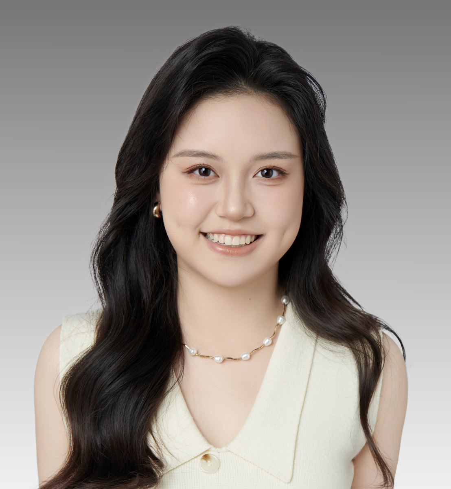

Hi! I'm Charlotte Liu (刘赫熙), an undergraduate student at the University of California, San Diego, class of 2029. I major in Molecular and Cell Biology with a minor in Bioethics. I grew up in Shunde, Guangdong, China. My name Hexi is pronounced "huh-see" — feel free to call me Charlotte!
I am passionate about understanding life at the molecular level. My academic journey has given me a deep appreciation for the elegance of biological systems and the power of experimental science.
Outside of academics, I find joy in ballet, figure skating, and playing the pipa (琵琶). I am a collaborator by nature and always believe in win-win solutions.